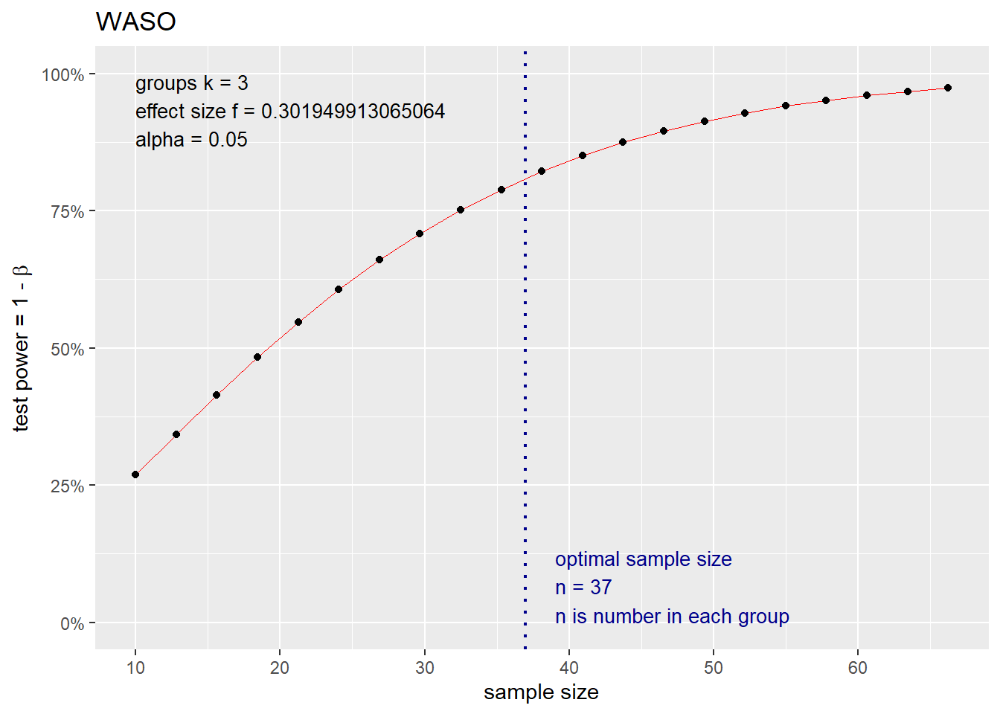
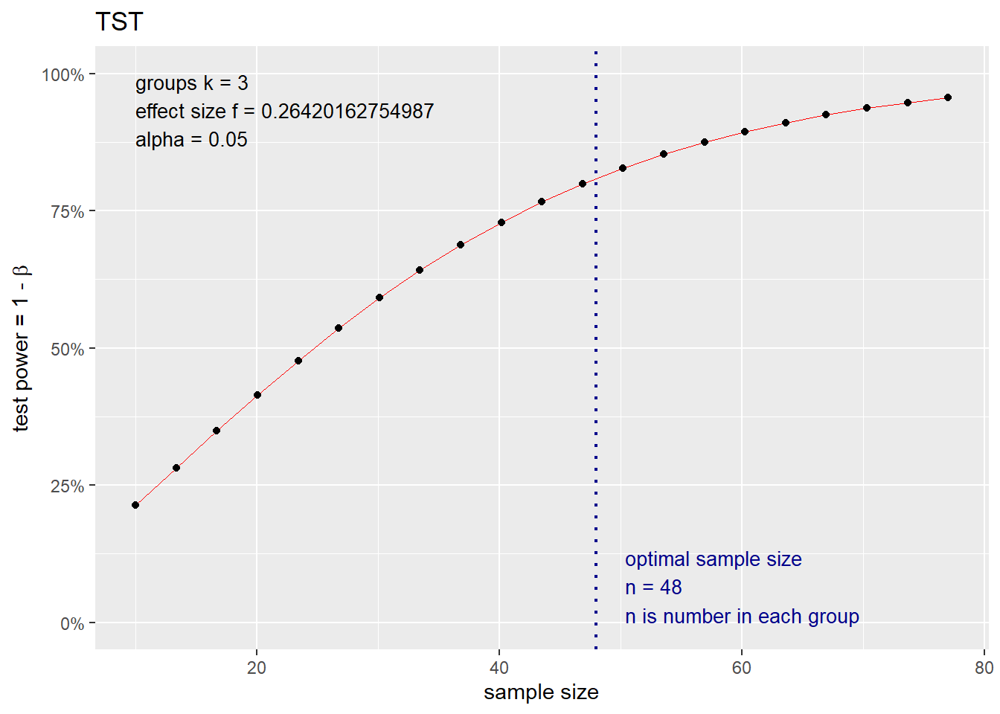

Sample size estimation


Overview
The aim of this analysis is to estimate the sample size for a study on the effects of sleep disruption and sleep duration on labor duration (the pregnancy project), with the goal of replicating the findings of Lee & Gay (2004).
Effect size estimation (Cohen’s f)
See Cohen (1988) and Maxwell et al. (2018) to learn more.
Code
# See Maxwell et al. (2018, p. 150)
f_unb <- function(k, n_total, f_test) {
checkmate::assert_int(k, lower = 2)
checkmate::assert_int(n_total, lower = 2)
checkmate::assert_number(f_test)
((k - 1) / n_total) %>%
`*`(((n_total - k - 2) / (n_total - k)) * (f_test - 1)) |>
sqrt()
}Parameters
The parameters for the effect size were extracted from Lee & Gay (2004), as shown below.
Controlling for infant birth weight, ANCOVA indicated that the degree of prenatal sleep disruption [WASO] had a significant effect on labor duration (\(\text{F}[2,125] = 6.93\), \(\text{P} = .001\)). (Lee & Gay, 2004, p. 2044)
Controlling for infant birth weight, ANCOVA indicated that prenatal sleep quantity (TST) also had a significant effect on labor duration (\(\text{F}[2,125] = 5.54\), \(\text{P} = .005\)). (Lee & Gay, 2004, p. 2044)
WASO = Wakefulness after sleep onset. TST = Total sleep time.
| \(n\) | Labor duration\(^{\ast}\) (mean \(\pm\) SD) | |
|---|---|---|
| WASO | ||
| \(15\%+\) | \(41\) | \(26.0 \pm 11.7^{\dagger}\) |
| \(10\%-14.9\%\) | \(32\) | \(16.3 \pm 12.9\) |
| \(<10\%\) | \(58\) | \(18.3 \pm 14.6\) |
| TST | ||
| \(<6 \text{h}\) | \(19\) | \(29.0 \pm 12.5^{\dagger}\) |
| \(6-6.9 \text{h}\) | \(38\) | \(20.5 \pm 11.3\) |
| \(7+ \text{h}\) | \(74\) | \(17.7 \pm 15.6\) |
\(^{\ast}\)Adjusted for infant birth weight. \(^{\dagger}\)Significantly longer labor than the other 2 groups.
Source: Lee & Gay (2004, p. 2044).
WASO
Code
k <- 3
num_df <- 2
den_df <- 125
n_total_waso <- den_df + k
f_test <- 6.93
f_unb_waso <- f_unb(k, n_total_waso, f_test)
f_unb_waso
#> [1] 0.3019499TST
Code
k <- 3
num_df <- 2
den_df <- 125
n_total_tst <- den_df + k
f_test <- 5.54
f_unb_tst <- f_unb(k, n_total_tst, f_test)
f_unb_tst
#> [1] 0.2642016Sample size estimation
Parameters
Code
alpha <- 0.05
power <- 0.8
k <- 3 # Number of groupsUsing the pwr R package
It’s important to note that, according to Cohen (1988, p. 403):
[…] sample size estimation in the analysis of covariance proceeds in exactly the same way as in analogous analysis of variance designs.
WASO
Code
test <- pwr::pwr.anova.test(
k = k,
f = f_unb_waso,
sig.level = alpha,
power = power
)
test
#>
#> Balanced one-way analysis of variance power calculation
#>
#> k = 3
#> n = 36.24212
#> f = 0.3019499
#> sig.level = 0.05
#> power = 0.8
#>
#> NOTE: n is number in each groupCode
pwr::plot.power.htest(test, type = "b", main = "WASO")
Code
ceiling(test$n * k) # Total sample size
#> [1] 109TST
Code
test <- pwr::pwr.anova.test(
k = k,
f = f_unb_tst,
sig.level = alpha,
power = power
)
test
#>
#> Balanced one-way analysis of variance power calculation
#>
#> k = 3
#> n = 47.02238
#> f = 0.2642016
#> sig.level = 0.05
#> power = 0.8
#>
#> NOTE: n is number in each groupCode
pwr::plot.power.htest(test, type = "b", main = "TST")
Code
ceiling(test$n * k) # Total sample size
#> [1] 142Using the G*Power software
See Faul et al. (2007) to learn more.
WASO
Code
F tests - ANCOVA: Fixed effects, main effects and interactions
Analysis: A priori: Compute required sample size
Input: Effect size f = 0.3019499
α err prob = 0.05
Power (1-β err prob) = 0.8
Numerator df = 2
Number of groups = 3
Number of covariates = 1
Output: Noncentrality parameter λ = 9.9379379
Critical F = 3.0828520
Denominator df = 105
Total sample size = 109
Actual power = 0.8009725TST
Code
F tests - ANCOVA: Fixed effects, main effects and interactions
Analysis: A priori: Compute required sample size
Input: Effect size f = 0.2642016
α err prob = 0.05
Power (1-β err prob) = 0.8
Numerator df = 2
Number of groups = 3
Number of covariates = 1
Output: Noncentrality parameter λ = 9.9119529
Critical F = 3.0617157
Denominator df = 138
Total sample size = 142
Actual power = 0.8027593Using Shieh’s method
See Shieh (2020) to learn more.
Code
#' Compute a power analysis and sample size for an ANCOVA design
#'
#' @description
#'
#' `ancova_muhtpo()` computes the __power__ and `ancova_muhtnp()` the
#' __sample size__ for a generalized linear hypothesis tests of treatment
#' effects.
#'
#' These functions were adapted from "Program C" and "Program D" algorithms
#' found in Shieh (2020) supplementary material.
#'
#' @details
#'
#' ## `contrast` parameter
#'
#' If `contrast = NULL`, `ancova_muhtnp()` will use the following contrast
#' matrix:
#'
#' `cbind(matrix(rep(1, group_n - 1), group_n - 1, 1), - diag(group_n - 1))`
#'
#' * Example:
#'
#' ```{r}
#' group_n <- 3
#'
#' cbind(matrix(rep(1, group_n - 1), group_n - 1, 1), - diag(group_n - 1))
#' ```
#'
#' Learn more about "contrast matrices" at
#' \url{https://en.wikipedia.org/wiki/Contrast_(statistics)}.
#'
#' @param group_n A number, greater than 1, indicating the number of groups.
#' @param group_ssize A [numeric][numeric()] object indicating the groups sample
#' sizes.
#' @param group_sratio A [numeric][numeric()] object indicating the groups
#' sample ratios.
#' @param group_amean A [numeric][numeric()] object indicating the adjusted
#' group means.
#' @param var A number indicating the variance.
#' @param cov_n A number, greater than 0, indicating the number of covariates.
#' @param alpha (optional) a number, from `0` to `1`, indicating the designated
#' significant level (\eqn{\alpha}{alpha}) (default: `0.05`).
#' @param power (optional) a number, between 0 and 1, indicating the nominal
#' power (default: `0.8`).
#' @param contrast (optional) a [matrix][matrix()] object with the contrast
#' coefficients. See the Details section to learn more (default: `NULL`).
#'
#' @return A [list][list()] object with the following elements:
#'
#' * `group_n`: a number indicating the number of groups.
#' * `cov_n`: a number indicating the number of covariates.
#' * `alpha`: a number indicating the designated significant level
#' (\eqn{\alpha}{alpha}) used.
#' * `power`: a number indicating the nominal power used (only for
#' `ancova_muhtnp()`).
#' * `lgamsq`: a [matrix][matrix()] object indicating `?`.
#' * `ssize_group`: a [numeric][numeric()] object indicating the sample size for
#' each group.
#' * `ssize_total`: a number indicating the total sample size.
#' * `epower`: a number indicating the estimated statistical power for the
#' sample size (\eqn{1 - \beta}).
#'
#' @references
#'
#' Shieh, G. (2020). Power analysis and sample size planning in ANCOVA designs.
#' _Psychometrika_, _85_(1), 101–120. \doi{10.1007/s11336-019-09692-3}
#'
#' @examples
#' ancova_muhtpo(group_n = 3, group_ssize = c(10, 10, 10),
#' group_amean = c(7.5366, 11.9849, 13.9785),
#' var = 29.0898, cov_n = 1, alpha = 0.05, contrast = NULL)
#'
#' ancova_muhtnp(group_n = 3, group_sratio = c(1, 1, 1),
#' group_amean = c(7.5366, 11.9849, 13.9785),
#' var = 29.0898, cov_n = 1, alpha = 0.05, power = 0.8,
#' contrast = NULL)
ancova_muhtpo <- function(group_n, group_ssize, group_amean, var, cov_n,
alpha = 0.05, contrast = NULL) {
checkmate::assert_int(group_n, lower = 2)
checkmate::assert_numeric(group_ssize, len = group_n)
checkmate::assert_numeric(group_amean, len = group_n)
checkmate::assert_number(var)
checkmate::assert_int(cov_n, lower = 1)
checkmate::assert_number(alpha, lower = 0, upper = 1)
checkmate::assert_matrix(contrast, max.cols = group_n, null.ok = TRUE)
if (is.null(contrast)) {
contrast <- cbind(matrix(rep(1, group_n - 1),
group_n - 1, 1), - diag(group_n - 1))
}
checkmate::assert_true(all(rowSums(contrast) == 0))
numint <- 2000
dd <- 1e-5
coevec <- c(1, rep(c(4, 2), numint / 2 - 1), 4, 1)
bl <- dd
bu <- 1 - dd
intl <- (bu - bl) / numint
bvec <- bl + intl * (0:numint)
cmu <- contrast %*% matrix(group_amean, group_n, 1)
df1 <- nrow(contrast)
ssize_total <- sum(group_ssize)
qmat <- diag(ssize_total / group_ssize)
lgamsq <- t(cmu) %*% solve(contrast %*% qmat %*% t(contrast)) %*% cmu / var
epowerf <- function() {
ssize_total <- sum(group_ssize)
df2 <- ssize_total - group_n - cov_n
dfx <- df2 + 1
b <- cov_n / dfx
fcrit <- stats::qf(1 - alpha, df1, df2)
if (cov_n == 1) {
tl <- stats::qt(dd, dfx)
tu <- stats::qt(1 - dd, dfx)
intl <- (tu - tl) / numint
tvec <- tl + intl * (0:numint)
wtpdf <- (intl / 3) * coevec * stats::dt(tvec, dfx)
epower <- sum(wtpdf * stats::pf( # nolint
fcrit, df1, df2, ssize_total * c(lgamsq) / (1 + b * tvec^2),
lower.tail = FALSE)
)
} else {
wbpdf <- (intl / 3) * coevec * stats::dbeta(bvec, dfx / 2,
cov_n / 2)
epower <- sum(wbpdf * stats::pf(
fcrit, df1, df2, ssize_total * lgamsq * bvec,
lower.tail = FALSE)
)
}
}
epower <- epowerf()
list(group_n = group_n, cov_n = cov_n, alpha = alpha, lgamsq = lgamsq,
ssize_group = group_ssize, ssize_total = ssize_total, epower = epower)
}
ancova_muhtnp <- function(group_n, group_sratio, group_amean, var, cov_n,
alpha = 0.05, power = 0.8, contrast = NULL) {
checkmate::assert_int(group_n, lower = 2)
checkmate::assert_numeric(group_sratio, len = group_n)
checkmate::assert_numeric(group_amean, len = group_n)
checkmate::assert_number(var)
checkmate::assert_int(cov_n, lower = 1)
checkmate::assert_number(alpha, lower = 0, upper = 1)
checkmate::assert_number(power, lower = 0, upper = 1)
checkmate::assert_matrix(contrast, max.cols = group_n, null.ok = TRUE)
if (is.null(contrast)) {
contrast <- cbind(matrix(rep(1, group_n - 1),
group_n - 1, 1), - diag(group_n - 1))
}
checkmate::assert_true(all(rowSums(contrast) == 0))
numint <- 2000
dd <- 1e-5
coevec <- c(1, rep(c(4, 2), numint / 2 - 1), 4, 1)
bl <- dd
bu <- 1 - dd
intl <- (bu - bl) / numint
bvec <- bl + intl * (0:numint)
cmu <- contrast %*% matrix(group_amean, group_n, 1)
df1 <- nrow(contrast)
qmat <- diag(sum(group_sratio) / group_sratio)
lgamsq <- t(cmu) %*% solve(contrast %*% qmat %*% t(contrast)) %*%
cmu / var
epowerf <- function() {
ssize_total <- sum(ssize_group)
df2 <- ssize_total - group_n - cov_n
dfx <- df2 + 1
b <- cov_n / dfx
fcrit <- stats::qf(1 - alpha, df1, df2)
if (cov_n == 1) {
tl <- stats::qt(dd, dfx)
tu <- stats::qt(1 - dd, dfx)
intl <- (tu - tl) / numint
tvec <- tl + intl * (0:numint)
wtpdf <- (intl / 3) * coevec * stats::dt(tvec, dfx)
ncp <- ssize_total * c(lgamsq) / (1 + b * tvec^2)
epower <- sum(wtpdf * stats::pf( # nolint
fcrit, df1, df2, ncp, lower.tail = FALSE)
)
} else {
wbpdf <- (intl / 3) * coevec * stats::dbeta(bvec, dfx / 2,
cov_n / 2)
epower <- sum(wbpdf * stats::pf(
fcrit, df1, df2, ssize_total * lgamsq * bvec,
lower.tail = FALSE)
)
}
}
n <- 5
epower <- 0
while (epower < power && n < 1000) {
n <- n + 1
ssize_group <- n * group_sratio
epower <- epowerf()
}
ssize_group < -n * group_sratio
ssize_total <- sum(ssize_group)
list(group_n = group_n, cov_n = cov_n, alpha = alpha, power = power,
lgamsq = lgamsq, ssize_group = ssize_group, ssize_total = ssize_total,
epower = epower)
}WASO
Code
# Group 1: 15+
n_1_waso <- 41
mean_1_adj_waso <- 26
sd_1_waso <- 11.7
# Group 2: 10%-14.9%
n_2_waso <- 32
mean_2_adj_waso <- 16.3
sd_2_waso <- 12.9
# Group 3: <10%
n_3_waso <- 58
mean_3_adj_waso <- 18.3
sd_3_waso <- 14.6
group_sratio <- c(
n_1_waso / n_total_waso,
n_2_waso / n_total_waso,
n_3_waso / n_total_waso
)
group_amean <- c(mean_1_adj_waso, mean_2_adj_waso, mean_3_adj_waso)
sd_pooled <-
(c(n_1_waso, n_2_waso, n_3_waso) - 1) %>%
`*`(c(sd_1_waso, sd_2_waso, sd_3_waso)^2) |>
sum() %>%
`/`(sum((c(n_1_waso, n_2_waso, n_3_waso) - 1))) |>
sqrt()
var_pooled <- sd_pooled^2
ancova_muhtnp(
group_n = k,
group_sratio = group_sratio,
group_amean = group_amean,
var = var_pooled,
cov_n = 1,
alpha = alpha,
power = power,
contrast = NULL
)
#> $group_n
#> [1] 3
#>
#> $cov_n
#> [1] 1
#>
#> $alpha
#> [1] 0.05
#>
#> $power
#> [1] 0.8
#>
#> $lgamsq
#> [,1]
#> [1,] 0.08899738
#>
#> $ssize_group
#> [1] 35.23438 27.50000 49.84375
#>
#> $ssize_total
#> [1] 112.5781
#>
#> $epower
#> [1] 0.8008998TST
Code
# Group 1: <6 h
n_1_tst <- 19
mean_1_adj_tst <- 29
sd_1_tst <- 12.5
# Group 2: 6-6.9 h
n_2_tst <- 38
mean_2_adj_tst <- 20.5
sd_2_tst <- 11.3
# Group 3: 7+ h
n_3_tst <- 74
mean_3_adj_tst <- 17.7
sd_3_tst <- 15.6
group_sratio <- c(
n_1_tst / n_total_tst,
n_2_tst / n_total_tst,
n_3_tst / n_total_tst
)
group_amean <- c(mean_1_adj_tst, mean_2_adj_tst, mean_3_adj_tst)
sd_pooled <-
(c(n_1_tst, n_2_tst, n_3_tst) - 1) %>%
`*`(c(sd_1_tst, sd_2_tst, sd_3_tst)^2) |>
sum() %>%
`/`(sum((c(n_1_tst, n_2_tst, n_3_tst) - 1))) |>
sqrt()
var_pooled <- sd_pooled^2
ancova_muhtnp(
group_n = k,
group_sratio = group_sratio,
group_amean = group_amean,
var = var_pooled,
cov_n = 1,
alpha = alpha,
power = power,
contrast = NULL
)
#> $group_n
#> [1] 3
#>
#> $cov_n
#> [1] 1
#>
#> $alpha
#> [1] 0.05
#>
#> $power
#> [1] 0.8
#>
#> $lgamsq
#> [,1]
#> [1,] 0.07479986
#>
#> $ssize_group
#> [1] 19.29688 38.59375 75.15625
#>
#> $ssize_total
#> [1] 133.0469
#>
#> $epower
#> [1] 0.8005404